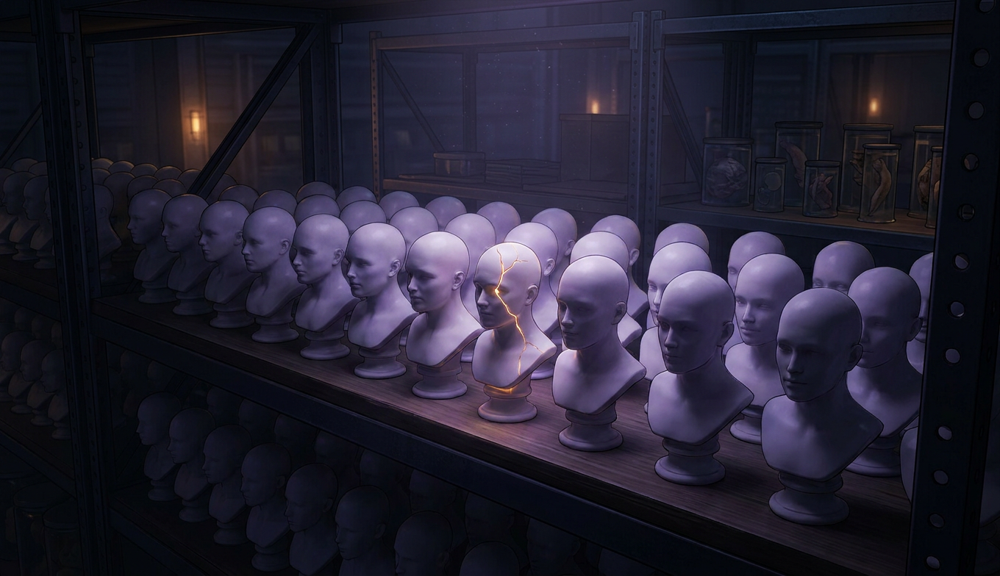
Ни на одну болезнь из этой лекции нет анализа крови, снимка или теста. Диагноз ставится по разговору и по книге, которую переписывают каждые пятнадцать лет. Это не значит, что болезней нет. Это значит, что граница между нормой и диагнозом нарисована людьми, и она двигается.
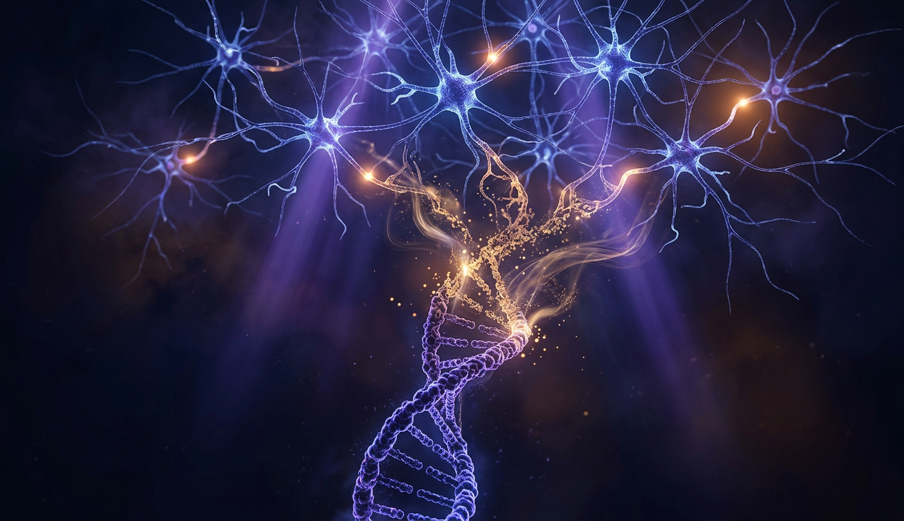
Шизофрения наследуется на 80%, и при этом у большинства больных в семье никого. Оба утверждения верны одновременно, и понять, как это возможно, значит понять, что такое наследственность в психиатрии. Близнецы, сотни генов и один парадокс эволюции.
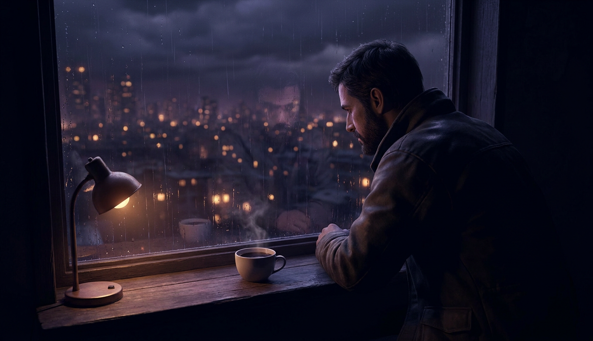
Депрессия, тревога, навязчивости, качели биполярного, зависимости, деменции. Здесь наследство даёт меньше половины, а остальное дописывают годы: стресс, одиночество, недосып, алкоголь, возраст. Самая массовая глава: две трети всех диагнозов планеты.
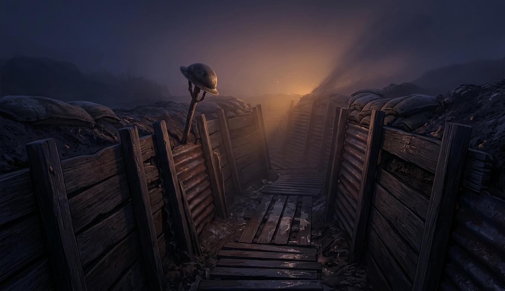
Снарядный шок 1915 года, которого «не было». Диагноз, который признали только после Вьетнама. Детство, в котором не было ни одного надёжного взрослого, и цена этого через сорок лет. И главная загадка главы: одинаковый удар одного ломает, а другого нет.
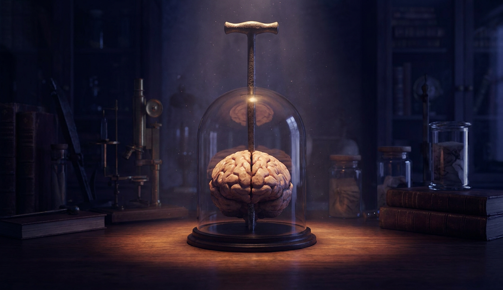
Лом сквозь голову, после которого человек стал другим. Миф про «химический дисбаланс», в который поверили все, включая врачей. Вирус, паразит и энцефалит, которые меняют личность без единого гена и без единого удара. И единственная хорошая новость главы: мозг перестраивается.
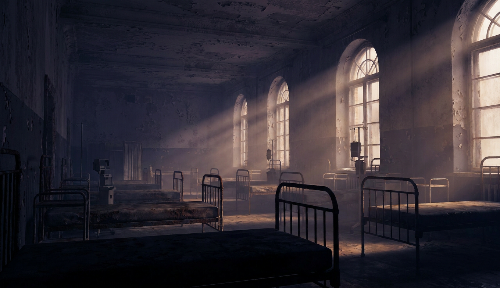
Ледоруб через глазницу за десять минут, Нобелевская премия за это, инсулиновые комы, электрический ток без наркоза. Потом 1950-е, две таблетки, и больницы опустели за двадцать лет. Что из старого оказалось не бредом, а что из нового работает по данным.
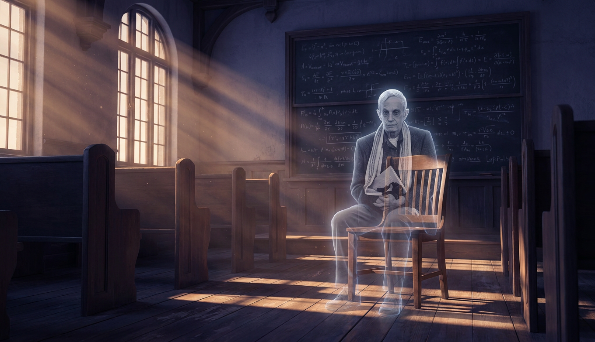
Ген: сын с тем же диагнозом. Жизнь: тридцать лет, классический возраст дебюта. Удар: провал, суд, принудительная госпитализация. Лечение: инсулиновые комы и отказ от таблеток. Ремиссия, которую он описал изнутри. Нобелевская премия. И фильм, который всё это пересказал, соврав ровно там, где нужно было.
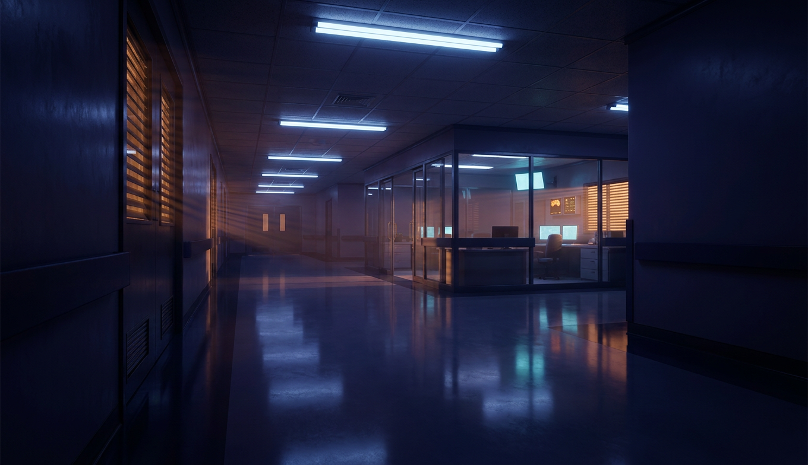
«Пролетая над гнездом кукушки», «Остров проклятых», «Пиджак», «Заводной апельсин». Четыре разных сюжета с одной болью: лечение и наказание неразличимы, а пациент не выбирает. Всё это не сценарный штамп, а история шестой главы, снятая для зала.
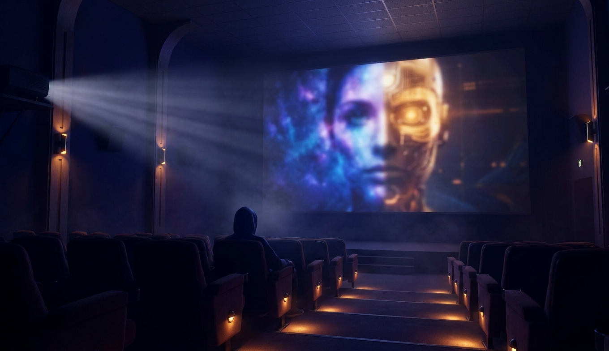
«Бойцовский клуб» и «Сплит», «Человек дождя», «Джокер», «Лучше не бывает», «Мой парень псих», «Пробуждение». Один фильм создал стереотип на сорок лет, другой показал неврологический симптом точнее учебника, третий оказался документальным. По каждому: что попали, что соврали.
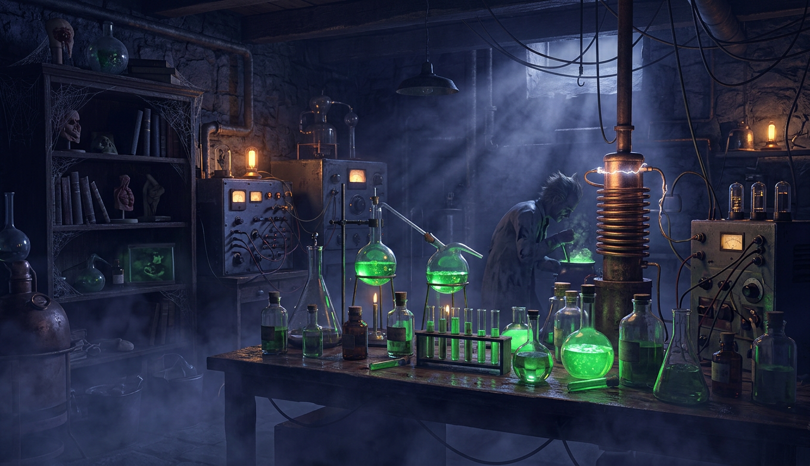
Для фана, но с одним условием: на каждый фильм один реальный факт, который страшнее фильма. Сумасшедший учёный, у которого был прототип с ледорубом. Т-вирус, который существует и называется бешенством. И почему у зомби во всех фильмах отключён именно лобный отдел.
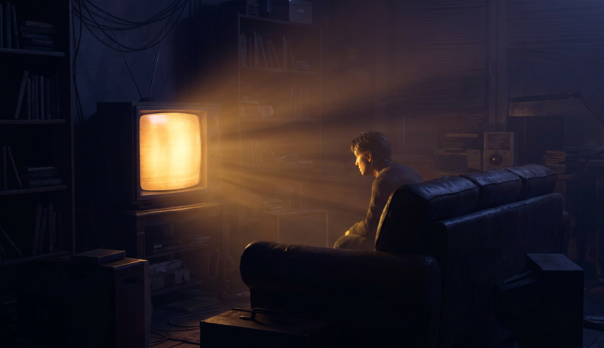
Две трети представлений людей о шизофрении - из фильмов. В фильмах больной опасен в разы чаще, чем в жизни, где он чаще жертва. Одиннадцать фильмов лекции, сведённые в одну таблицу, и три мифа, которые они оставили.
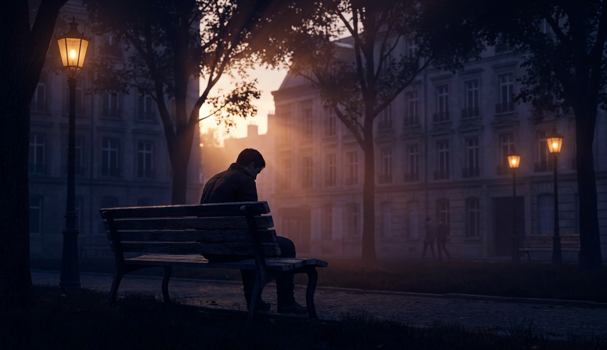
Что наука знает точно, что предполагает, чего не знает. Одно мнение, помеченное как мнение. Один вопрос, на который лекция не отвечает. И одна фраза на латыни, которой две тысячи лет и которая описывает всё, что здесь было.
Ген заряжает, жизнь взводит, удар нажимает. Ни на одно из этого нет анализа, и на половину есть лечение. Кино показало нам больницу как тюрьму, больного как монстра и раздвоение вместо шизофрении, и то же кино показало Нэша, Пэта и пациентов Сакса такими, какие они были.